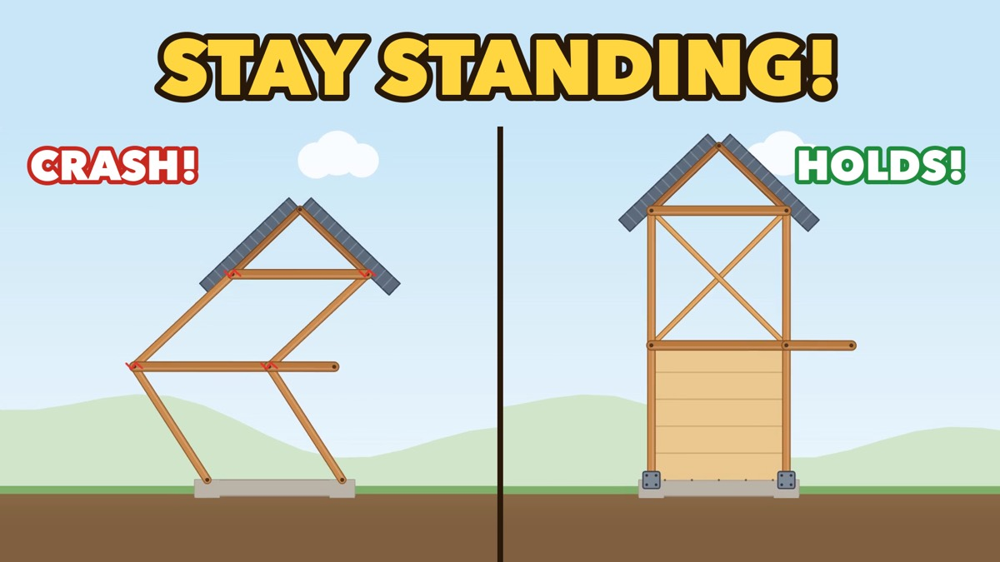

← L.D 게임 나라
버텨라! — 건축가가 만든 지진 보강 퍼즐Stay Standing!
정해진 예산으로 옛 집을 보강하고 지진을 버텨보세요. 실제 현장에서 쓰는 보강 원리(가새, 합판 전단벽, 철골 X브레이스, 기둥 보강)를 놀이로 배웁니다.
학생, 부모님, 우리 집이 궁금한 분 모두에게. 건축가 스튜디오 LeDeuxions가 만들었습니다.

▶ 시작하기 (가로로 돌려 주세요)
무엇을 배우나요
- 가새기둥과 보 사이에 비스듬히 대는 부재. 네모가 찌그러지지 않게 삼각형을 만듭니다.
- 합판 전단벽벽 한 면을 판으로 덮어 옆으로 미는 힘을 벽 전체가 나눠 받게 합니다.
- 철골 X브레이스철근콘크리트 건물 칸에 X자 철골을 넣어 흔들림을 잡습니다.
- 기둥 보강약한 기둥을 감싸거나 키워서 먼저 부서지지 않게 합니다.
하는 법
- 절점(부재가 만나는 점)에서 절점으로 끌어 가새를 대고, 칸이나 기둥을 눌러 벽·철골·기둥 보강을 넣습니다.
- 정해진 예산 안에서 고르세요. 많이 댄다고 좋은 게 아닙니다.
- 지진 버튼을 누르고 집이 끝까지 서 있는지 봅니다.
2D 나무집·철근콘크리트 20판, 3D 20판, 모두 40판. 진행 상황은 이 브라우저에만 저장됩니다(서버로 보내지 않음).
게임 속 물리는 원리를 보여주려고 단순하게 만든 것입니다. 실제 건물의 내진 성능은 전문가의 구조 검토로 확인하세요.
English — Brace old houses before the earthquake hits, using the same ideas a working architect uses on site: diagonal braces, plywood shear walls, steel X-braces and column strengthening. Drag braces between joints, stay within budget, then hit Earthquake! 40 levels across wood-frame and reinforced-concrete buildings, in 2D and 3D. The game switches to English automatically when your browser language is not Korean. Made by LeDeuxions, an architect's studio.